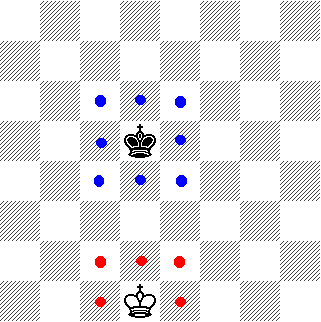
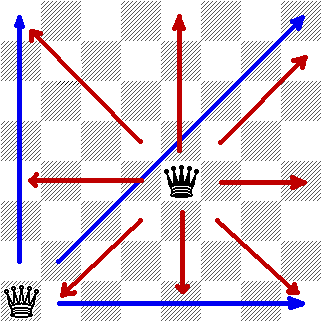
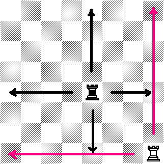
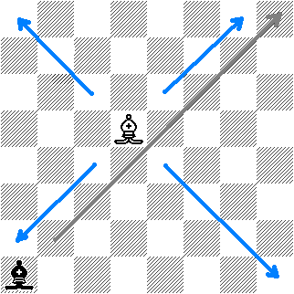
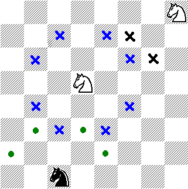
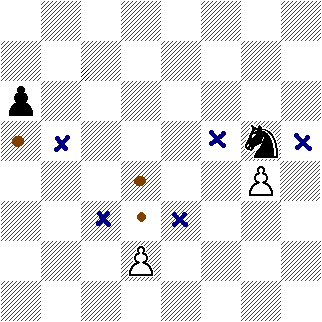

Moviendo las piezas
El movimiento de las piezas se desarrolla dentro del tablero, es decir, las piezas no pueden salir del tablero, sólo cuando han sido capturadas por el bando contrario. Además, ninguna pieza puede saltarse otra pieza (ya sea propia o contraria) que se encuentre en su trayectoria. El caballo hace excepción de esta regla. El caballo puede saltar sobre las piezas, pero la casilla a que se dirige no debe estar ocupada por ninguna pieza de su bando.
El rey
El rey sólo se puede mover en las casillas que se encuentran alrededor de él, o sea, hacia todas las direcciones una casilla. En la imagen se ilustra que el rey negro (ubicado en el centro) tiene la posibilidad de moverse hacia ocho casillas (marcadas con puntos azules). En cambio, el rey blanco ubicado en el borde inferior del tablero tiene la posibilidad de moverse a cinco casillas.

La dama (reina)
La dama o también llamada la reina, puede moverse de forma horizontal, verticalmente, diagonalmente, es decir, hacia todas las direcciones, la cantidad de casillas que desee dentro del tablero.

La torre
La torre puede moverse entre columnas y filas, es decir, no se puede mover en las diagonales, su movimiento se realiza en "líneas rectas" verticales u horizontales.

El alfil
El alfil realiza su movimiento en las diagonales. Es importante denotar que un alfil sólo se mueve en las casillas donde se encuentra ubicado, no puede atacar, ni defender casillas de diferente color. Cada uno de los bandos posee dos alfiles al inicio de una partida.

El caballo
El movimiento del caballo es muy particular, éste posee la propiedad que puede saltar (brincar) sobre piezas, ya sea de su bando o del contrario. El caballo se mueve saltando sobre una casilla horizontal o vertical y después una casilla diagonal. También, se puede entender como una pequeña "L".

El peón
El peón avanza en la columna en que se hallaba colocado, un paso adelante solamente (no puede retroceder nunca). Saliendo de su casilla inicial, puede avanzar, según desee el jugador, tanto uno como dos pasos.

Es importante resaltar que las piezas negras están colocadas arriba y las blancas abajo, de tal manera que en los gráficos, los avances del blanco van hacia arriba y los avances del negro hacia abajo.